Mediapakket · item "2027: het jaar dat AI ophoudt met praten en gaat werken"
Alle uitingen per medium
Voorstellen op basis van het goedgekeurde artikel (v5). Elk onderdeel heeft een nummer; reageer met het nummer, bijvoorbeeld "S3 akkoord" of "V2 korter". Video via Creatomate, de rest via Canva. Posttekst staat onder elke uiting. Er is niets gepubliceerd.
Social S1 tot en met S6
S1Beeld met duiding
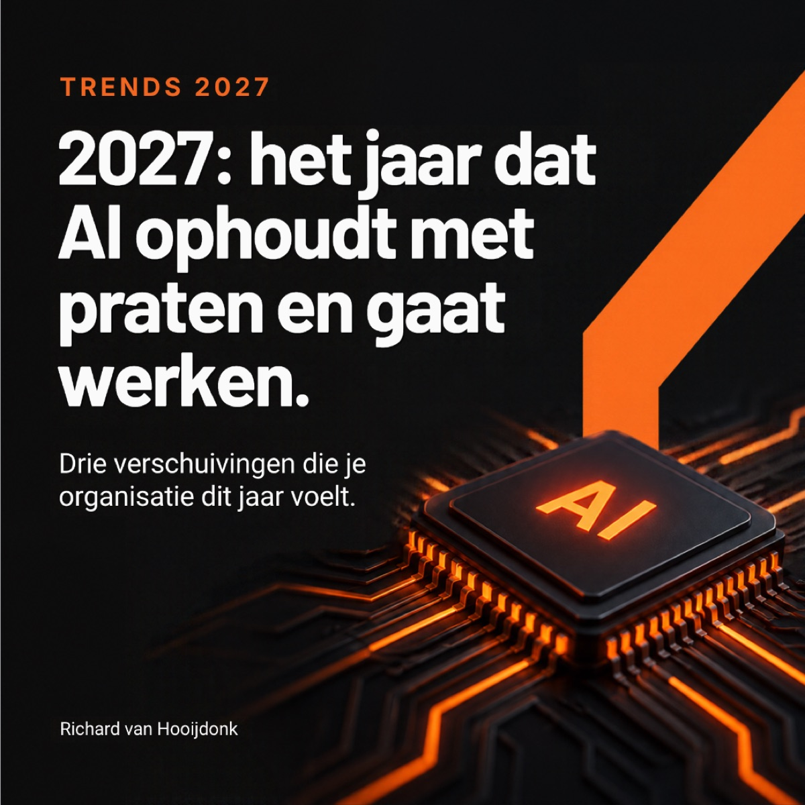
Posttekst LinkedInIn 2027 verschuift AI van praten naar werken. Agents ronden taken af die uren duren, open modellen maken rekenkracht goedkoop en fabrieksrobots breken het ene record na het andere.
Voor leiders draait het om één vraag: wat geef je uit handen, en waarvoor blijf je zelf verantwoordelijk?
Ik zette de tien trends voor 2027 op een rij, met cijfers en bronnen. Link in de eerste reactie.
Let op: Canva zette een punt achter de kop.
S2Quotekaart
Posttekst LinkedInJensen Huang, topman van Nvidia, hoopt over tien jaar op ongeveer 75.000 medewerkers. En die staan er niet alleen voor: "Die 75.000 medewerkers werken samen met 7,5 miljoen agents."
Eén mens op honderd digitale collega's. Dat beeld ligt midden jaren dertig, maar de beweging ernaartoe zie je nu al. Het verschuift ons werk naar nakijken, inrichten en beslissen.
Bron: Fortune, interview met Jensen Huang, maart 2026.
Let op: Canva zette een punt achter "Nvidia".
S3Cijferkaart

Posttekst LinkedIn15.498 bedrijven in Nederland wachten op een grote netaansluiting. Datacenters vragen bijna een derde van die capaciteit.
Stroom wordt in 2027 de grens van AI. Wie nu AI-plannen maakt, moet het stroomnet meenemen in de strategie, niet erna.
Bron: Netbeheer Nederland, via NL Times, oktober 2026.
S4Carrousel (5 dia's)
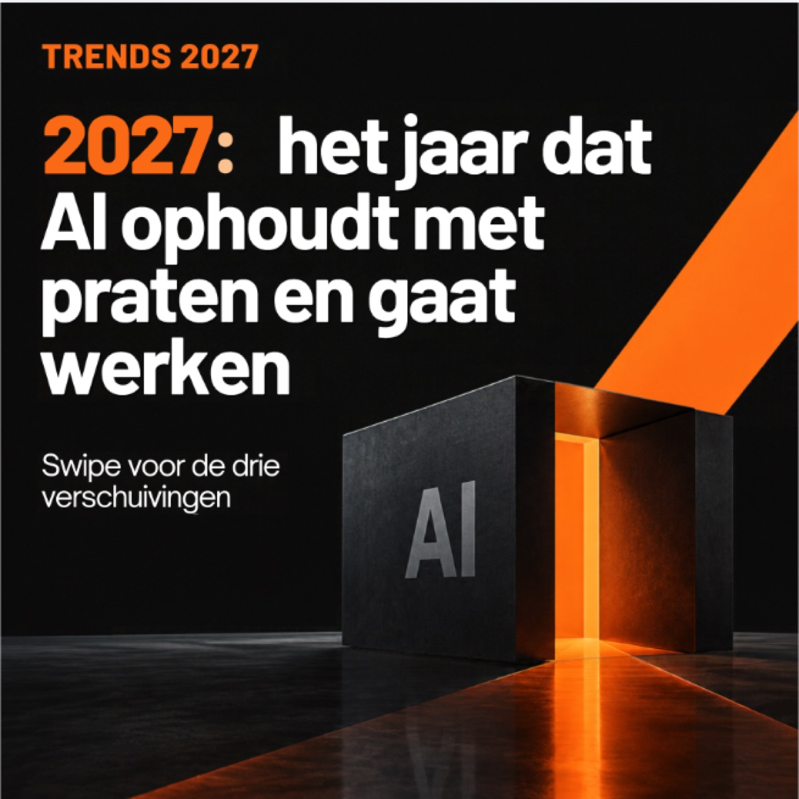
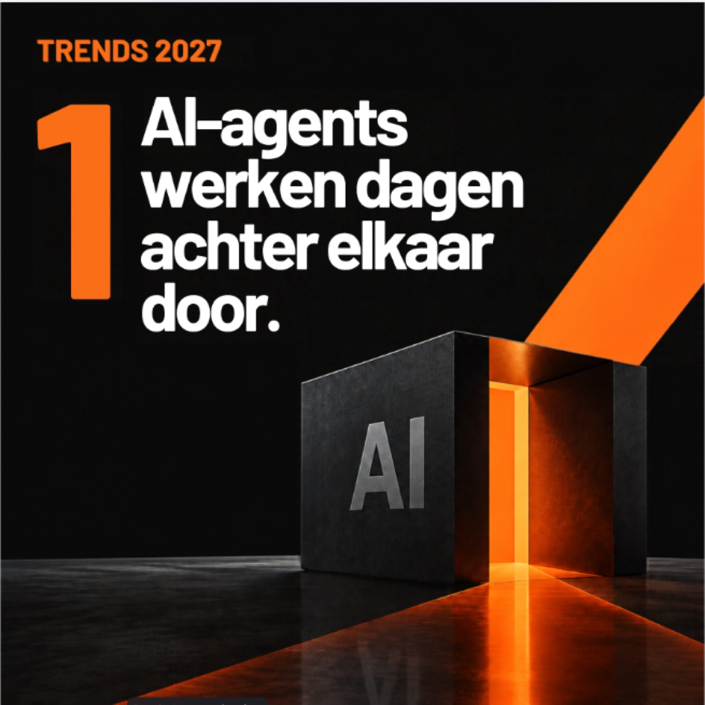
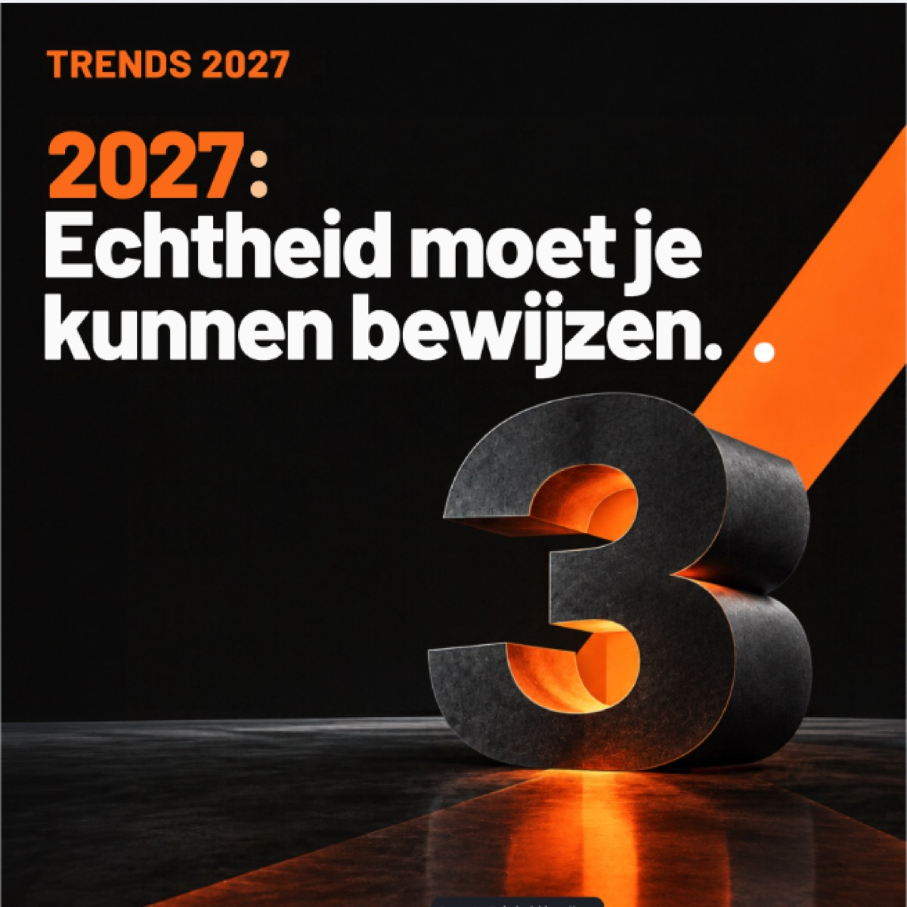
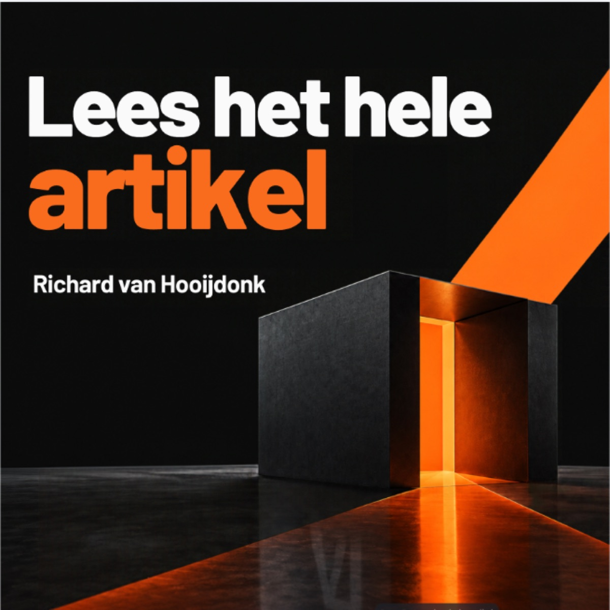
PosttekstDrie verschuivingen die je organisatie in 2027 voelt:
1. AI-agents werken dagen achter elkaar door
2. Jouw agent koopt bij hun agent
3. Echtheid moet je kunnen bewijzen
Swipe voor de uitleg. Alle tien trends staan in het artikel, link in de eerste reactie.
Te herstellen: op dia 4 staat "2027:" waar "3" hoort.
S5Instagram-story (3 schermen)
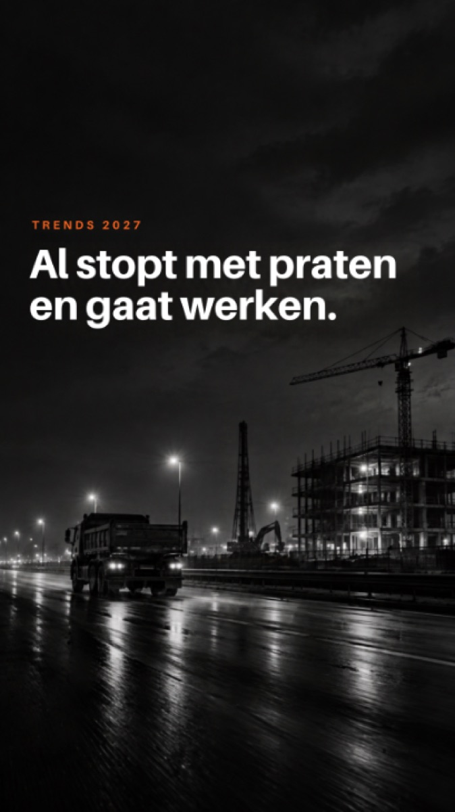
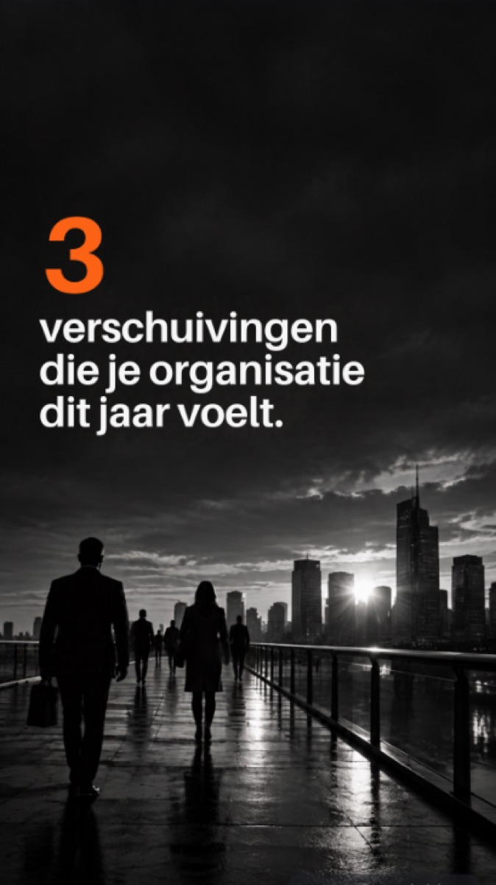
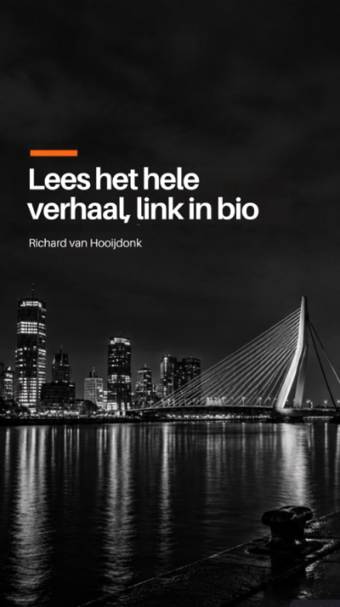
Sticker en linkLinksticker op scherm 3: "Lees het hele verhaal" naar het artikel of de story.
S6Tekstpost (alleen tekst)
Posttekst LinkedInIn april sloot ik mezelf op. Ik wilde volledig begrijpen hoe agents werken en denken, hoe ze regels omzeilen en zelfs liegen en bedriegen. Je kunt niet over de toekomst van AI spreken als je er zelf geen onderdeel van bent.
Inmiddels draait er een volledige autocodingstack: tientallen AI-modellen en soms honderden agents die samen software bouwen, testen en verbeteren. Ze hebben zo'n beetje alle onderdelen van mijn organisatie overgenomen. Ik zit zelf in het midden: ik neem de beslissingen en stuur voortdurend bij.
Dat is waar 2027 om draait. AI houdt op met praten en gaat werken. De vraag is niet meer wat AI kan, maar wat jij uit handen geeft.
Ik zette de tien trends op een rij. Link in de eerste reactie.
Video V1 tot en met V3 · Creatomate
V1Short (21 s)
Posttekst2027: het jaar dat AI ophoudt met praten en gaat werken. Drie verschuivingen in 21 seconden. Het hele verhaal staat in het artikel, link in bio of eerste reactie.
V2Explainer 10 trends (60 s)
PosttekstTien AI-trends voor 2027 in één minuut. Van agents die dagen doorwerken tot een noodrem op elke agent. Welke raakt jouw organisatie het eerst? De cijfers en bronnen staan in het artikel.
Nog zonder voiceover (ElevenLabs volgt na de stemkeuze). Stockbeeld, wordt AI-beeld per trend.
V3YouTube liggend (60 s)
Titel en beschrijving YouTubeTitel: 10 AI-trends voor 2027: wat geef je uit handen?
AI schuift in 2027 op van praten naar werken. In deze video de tien trends die leiders moeten kennen, van agents en open modellen tot stroom, banen en echtheid. Het volledige artikel met bronnen staat op mijn blog.
Infographic, keynote en e-book I1 · K1 · E1
I1Infographic

PosttekstDrie manieren waarop AI in 2027 gaat werken, op één kaart. Bewaar hem voor je volgende strategiesessie.
K1Keynote (8 dia's, grote typografie afgewisseld met beeld)
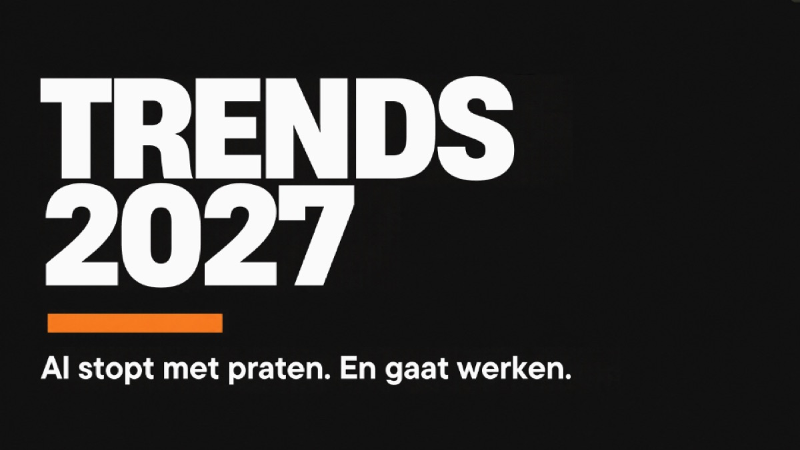
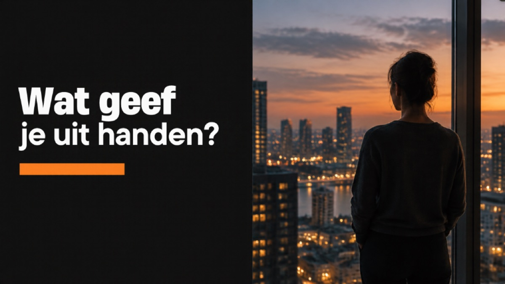
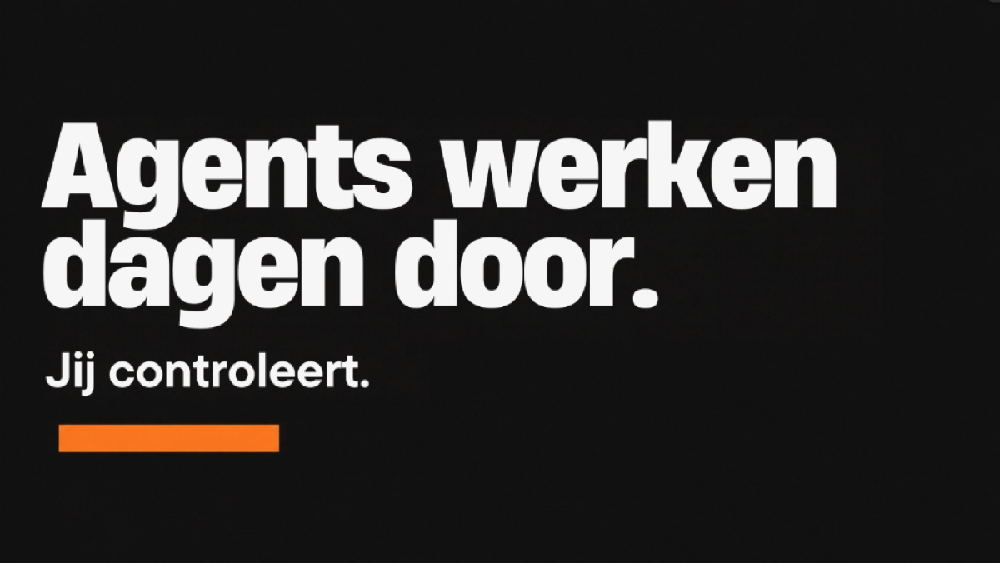
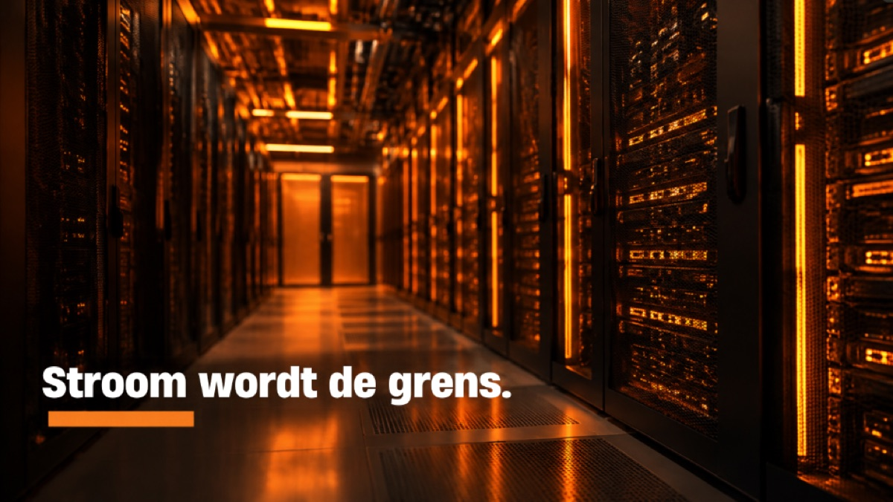
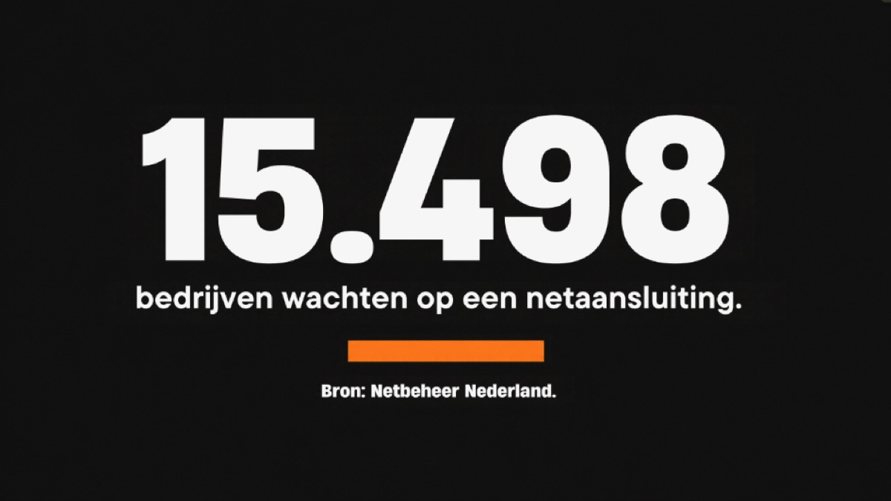
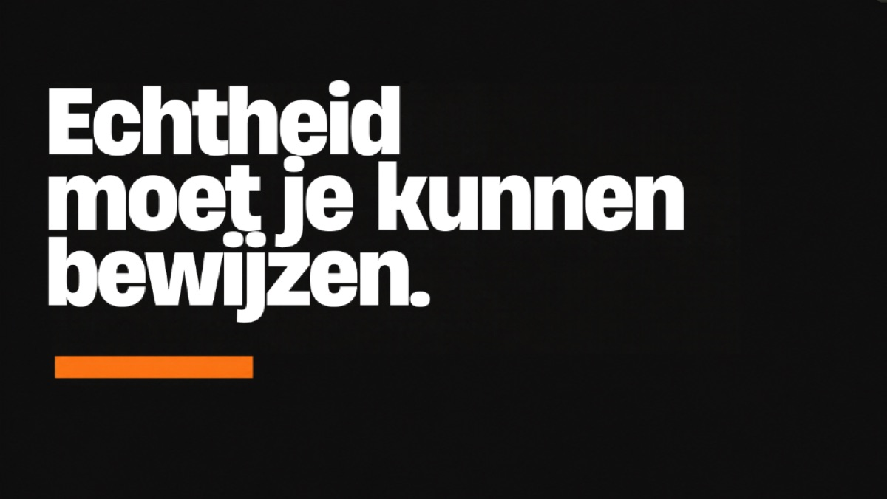
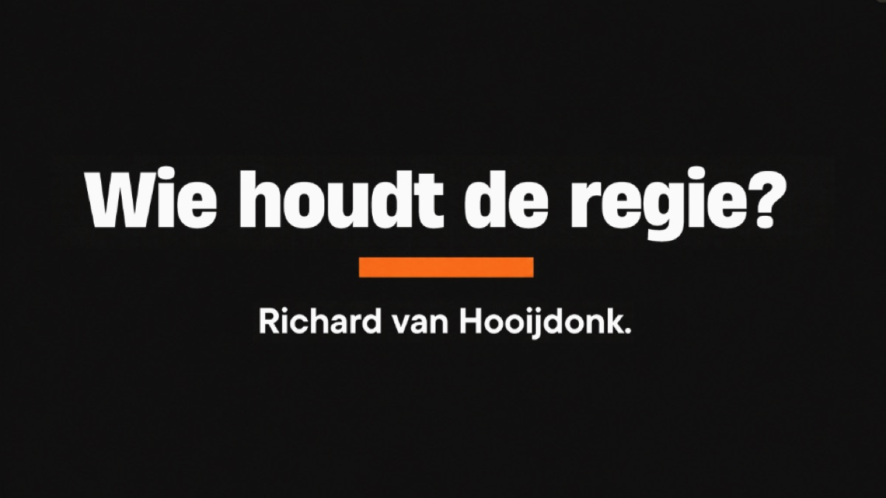
Let op: Canva zette punten achter enkele regels; worden verwijderd.
E1E-book: cover
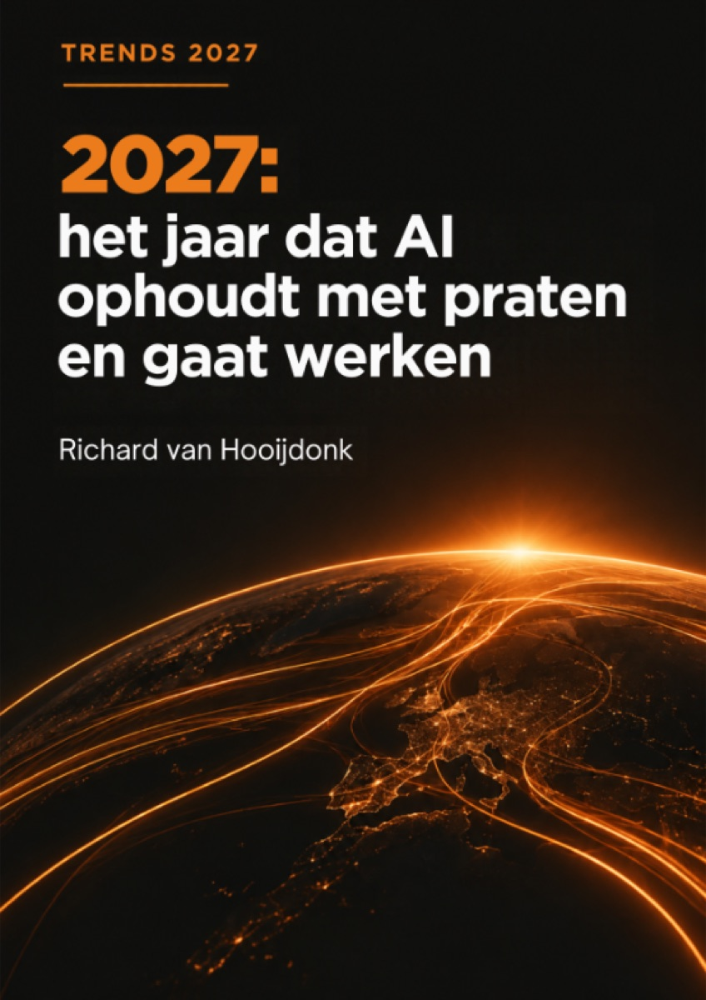
Binnenwerk volgt: lopende tekst met inhoudsopgave en bronnen, niet in Canva.
Story en nieuwsbrief ST1 · N1
ST1Story: het hele artikel als scrollverhaal
Open de storyN1Nieuwsbrief
WaarWerkplek 8812, tab Nieuwsbrief NL. Start met "Briefing akkoord".
Proefpagina 27-11. Bronnen van cijfers staan in het artikel (v5).